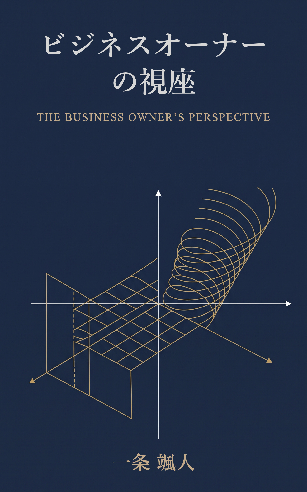

Kindle Edition
ビジネスオーナーの視座
制御開発エンジニアの思考と10年の市場運用から導く、持続的競争優位性（モート）と資本効率の数理。
不確実な市場環境下において、企業の構造的優位性をいかに見極め、資本家としての立場を長期的に確立するか。感情を排した構造解析と自律運用のフレームワークを提示します。

制御開発エンジニアの思考と10年の市場運用から導く、持続的競争優位性（モート）と資本効率の数理。
不確実な市場環境下において、企業の構造的優位性をいかに見極め、資本家としての立場を長期的に確立するか。感情を排した構造解析と自律運用のフレームワークを提示します。